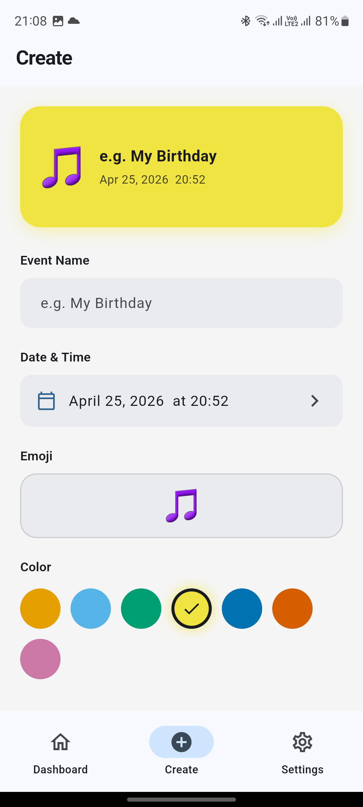
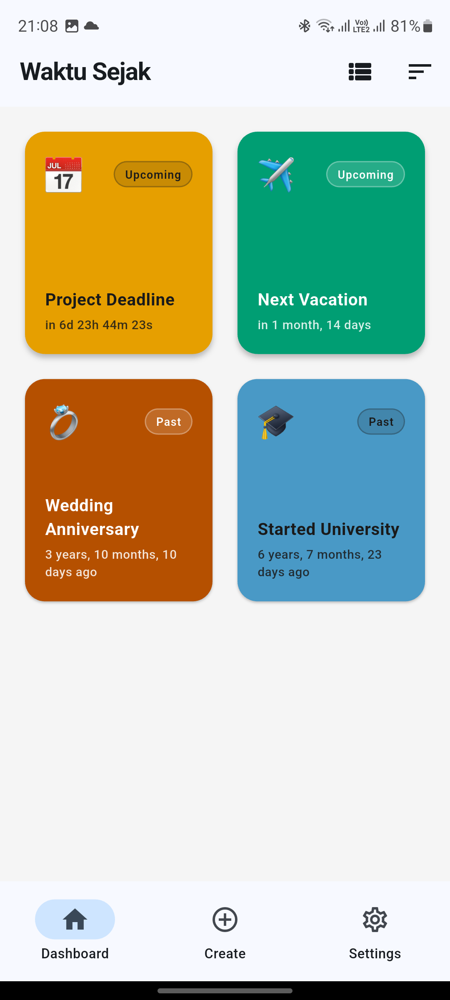
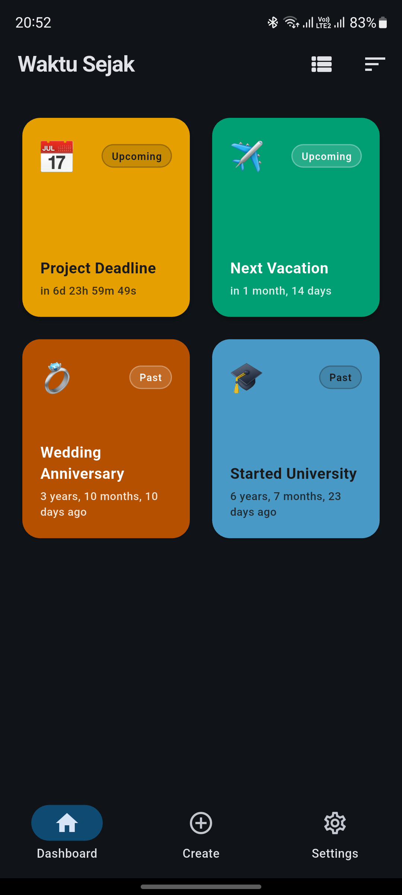
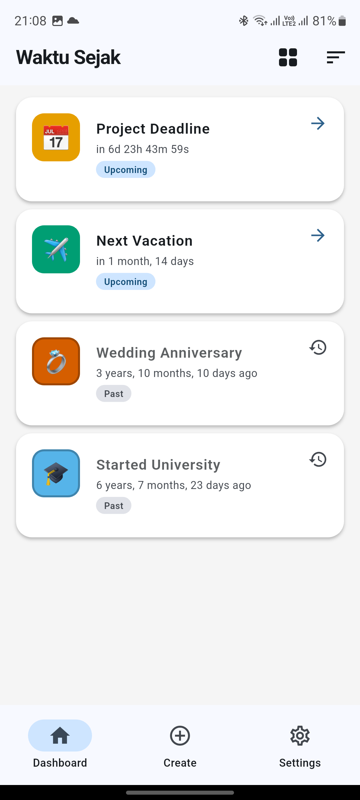

Aplikasi pelacak waktu minimalis — ketahui berapa lama yang lalu sesuatu terjadi, atau berapa lama lagi sesuatu akan terjadi.



Fitur
Beralih antara grid kartu 2 kolom dan daftar ringkas dengan satu ketukan.
Tampilan waktu diperbarui setiap detik secara real-time. Akurat hingga tahun, bulan, dan hari.
Kartu pratinjau diperbarui saat Anda mengetik, jadi Anda tahu persis tampilannya.
Pilih antara Sistem, Terang, atau Gelap. Preferensi tersimpan antar sesi.
Bahasa Indonesia dan English — semua teks dan durasi waktu langsung berubah.
Backup semua event ke JSON. Impor dengan merge — duplikat otomatis dilewati.
Tampilan Aplikasi

Aksesibilitas
Menggunakan palet warna yang dapat dibedakan oleh semua jenis buta warna umum.
Event masa lalu vs. mendatang dibedakan lewat bentuk, label, dan ikon — bukan warna saja.
Warna teks pada kartu event otomatis dipilih (gelap/terang) berdasarkan luminansi latar belakang untuk keterbacaan optimal.
Download
Saat ini tersedia via sideload APK dari GitHub. Rilis di store segera hadir.